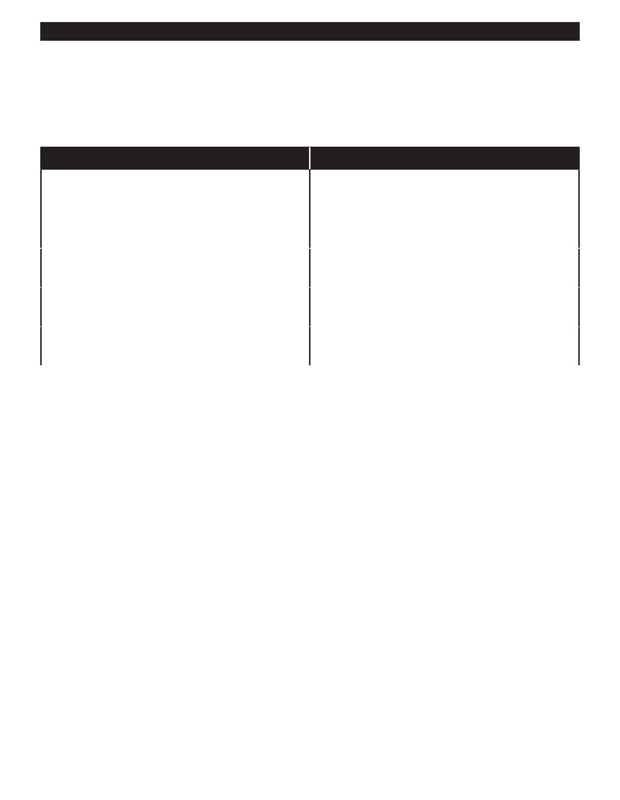

PA RT I C I PA N T R E S O U R C E G U I D E
Common Tub and Shower Problems and Solutions
Besides those pesky leaks, the most common problem for tubs and showers is a slow
shower that acts more like a sprinkling can.
Problem
Solution(s)
Shower water comes out slowly or does not come
Clean or replace clogged showerhead. (Page 50.)
out at all.
Repair diverter valve in three-handle faucet. (Page 51.)
Replace tub spout in single- and two-handle faucet.
(Page 52.)
Leaky three handle faucet.
Repair as a cartridge or compression faucet.
(Pages 25 – 34.)
Leaky two-handle faucet.
Repair as a cartridge or compression faucet.
(Pages 25 – 34.)
Leaky single-handle faucet.
Repair as a ball-type, cartridge, or disc faucets.
(Pages 25 – 34.)
49